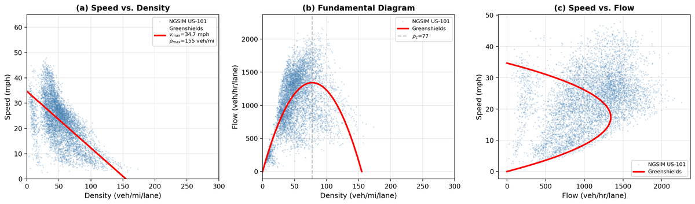
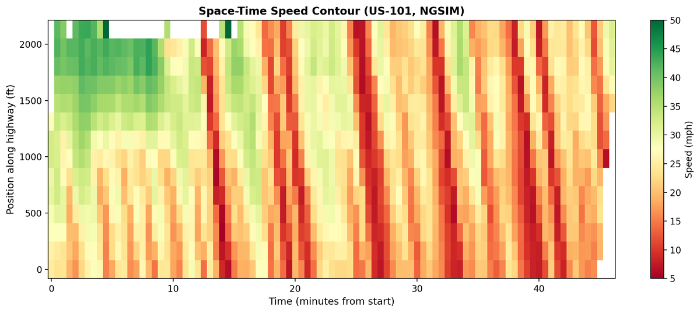
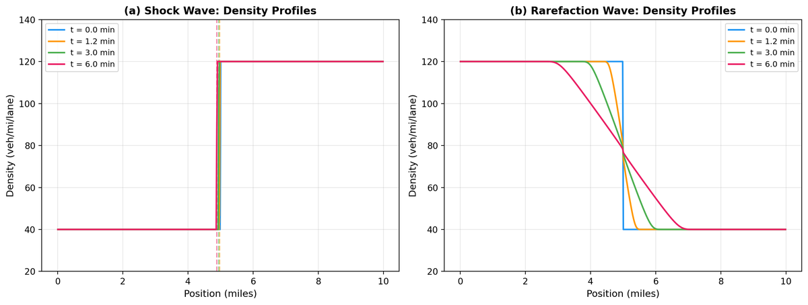

Shock Wave Dynamics in Traffic Flow: LWR Model Calibration and Validation with NGSIM Data.
Abstract
This paper investigates the ability of first-order nonlinear conservation laws to capture the formation and propagation of traffic congestion waves in real highway data. The Lighthill–Whitham–Richards (LWR) model is derived from first principles and calibrated using high-resolution vehicle trajectory data from the NGSIM US-101 dataset. Empirical fundamental diagrams are constructed using Edie's definitions, and the Greenshields model is fitted to obtain macroscopic traffic parameters.
Analytical results from the method of characteristics are used to predict shock formation and propagation, and the Rankine–Hugoniot condition is applied to estimate shock speeds. These predictions are compared with observed congestion waves extracted from space–time speed contours. Despite its simplicity, the LWR model reproduces the qualitative structure of backward-propagating traffic shocks and provides reasonable quantitative agreement in shock speeds.
A Godunov finite volume scheme is implemented to solve the model numerically, and simulation results are compared with both analytical solutions and empirical observations. The results highlight both the strengths and limitations of first-order traffic flow models and provide a foundation for incorporating data-driven corrections in future work.
★ At a glance
- Model
- LWR scalar conservation law with Greenshields fundamental diagram
- Numerical scheme
- Godunov finite volume, CFL = 0.9
- Data
- NGSIM US-101 trajectories · Jun 15, 2005 · ~3M observations
- Aggregation
- Edie's definitions, 50 m × 30 s cells, 5 lanes
- Free-flow speed vmax
- 34.7 mph
- Jam density ρmax
- 155 veh/mi/lane
- Critical density ρc
- 77 veh/mi/lane
- Capacity qmax
- 1,342 veh/hr/lane
- Implementation
- Python · NumPy · pandas · matplotlib
- Length
- 37 pages · 49 numbered equations · 4 figures · 11 references
§ Contents
Sections & appendices
- 1Introduction and Motivation
- 2Derivation of the LWR Conservation Law
- 3Calibration from NGSIM Data
- 4Method of Characteristics & Wave Breaking
- 5Shock Waves & Rankine–Hugoniot
- 6Riemann Problems
- 7Burgers' Equation & Viscous Shocks
- 8Godunov Finite Volume Scheme
- 9Results & Comparison with Real Data
- 10Model Limitations
- 11Conclusions
- AData processing code
- BGodunov solver code
- CPlotting code
1 Introduction and Motivation
Traffic jams behave like shock waves. The same nonlinear conservation laws that govern shock formation in gas dynamics also describe how congestion forms and propagates along a highway — a fact first established by Lighthill and Whitham (1955) and independently by Richards (1956).
This project carries out a complete mathematical analysis of the LWR traffic flow model, from the derivation of the governing equation to numerical simulation and comparison with real data. The work covers (i) deriving the LWR conservation law from first principles, (ii) using the method of characteristics to predict shock formation, (iii) applying the Rankine–Hugoniot jump condition to compute shock speeds, (iv) studying Burgers' equation as a model for the internal structure of the shock, (v) implementing a Godunov-type finite volume scheme, and (vi) calibrating and validating the model on the NGSIM US-101 dataset.
2 Derivation of the LWR Conservation Law
The traffic density \(\rho(x,t)\) and flux \(q(x,t)\) on a single-lane highway must obey vehicle conservation. Applying the conservation principle to a fixed segment and shrinking the interval gives the continuity equation:
The model is closed by the equilibrium assumption \(q = q(\rho)\) — the fundamental diagram. Substituting the simplest such closure, the Greenshields model \(v(\rho) = v_{\max}(1 - \rho/\rho_{\max})\), gives the LWR equation:
Three observations follow that drive the rest of the analysis: the wave speed \(c(\rho)\) is less than the vehicle speed \(v(\rho)\), so information travels backward relative to the cars; \(c(\rho)\) is negative for \(\rho > \rho_c\), so disturbances propagate against traffic in congestion; and \(c(\rho)\) depends on \(\rho\), making the equation nonlinear and shock-forming.
3 Calibration from NGSIM Data
The Next Generation Simulation (NGSIM) US-101 dataset captures individual vehicle trajectories on the southbound Hollywood Freeway in Los Angeles, collected on June 15, 2005 over three 15-minute peak-traffic windows. The raw data records position, speed, and lane assignment for every vehicle at 0.1-second intervals, giving roughly three million individual observations across five mainline lanes.
Microscopic trajectories are converted to macroscopic density, flow, and space-mean speed using Edie's generalized definitions on a space–time grid of 50 m × 30 s cells. Per-lane aggregation produces ~6,200 fundamental-diagram observations.

Linear regression of speed on density yields the calibrated parameters vmax = 34.7 mph, ρmax = 155 veh/mi/lane, ρc = 77 veh/mi/lane, and qmax = 1,342 veh/hr/lane. The lower-than-posted free-flow speed reflects the fact that the data was collected during peak congestion — the dataset contains almost no truly free-flow traffic.

4 Method of Characteristics & Wave Breaking
A characteristic curve is a path \(x(t)\) along which the LWR PDE reduces to an ODE: \(\rho\) is constant along the characteristic, so each piece of the initial profile propagates at its own wave speed \(c(\rho_0(\xi))\). Characteristics from regions of differing density can collide. When they do, the profile steepens until it becomes multi-valued — the gradient catastrophe. The breaking time is
For Greenshields, \(q'' < 0\), so wave breaking occurs whenever the initial density is increasing — the physically intuitive case of light traffic catching up to heavy traffic. A shock forms at the boundary.
5 Shock Waves & the Rankine–Hugoniot Condition
At a discontinuity, the classical PDE breaks down and we look for weak solutions that satisfy the conservation law in integral form. The Rankine–Hugoniot jump condition relates the shock speed \(\dot s\) to the jump in density and flux across it:
For Greenshields with left state \(\rho_l\) and right state \(\rho_r\), a direct computation gives \(\dot s = v_{\max}(1 - (\rho_l + \rho_r)/\rho_{\max})\). The shock moves backward whenever \(\rho_l + \rho_r > \rho_{\max}\) — the physical signature of a backward-propagating traffic jam.
The Rankine–Hugoniot condition by itself does not select a unique solution. The Lax entropy condition picks the physically admissible one: a shock from \(\rho_l\) to \(\rho_r\) is admissible iff \(c(\rho_l) > \dot s > c(\rho_r)\). For the concave Greenshields flux this is equivalent to requiring \(\rho_l < \rho_r\) (density increases across the shock — the back of a jam, not the front).
6 Riemann Problems: Three Traffic Scenarios
A Riemann problem is the LWR equation with piecewise-constant initial data. Three Riemann problems with the calibrated NGSIM parameters cover the canonical traffic situations:
- Scenario 1 — Approaching a jam. Light traffic (\(\rho_L = 40\)) meets heavy congestion (\(\rho_R = 120\)). A backward-propagating shock forms with speed \(\dot s = -1.1\) mph: drivers cruising at 25.7 mph encounter the shock and abruptly slow to 7.8 mph.
- Scenario 2 — Green light release. Queued traffic (\(\rho_L = 120\)) ahead of free road (\(\rho_R = 40\)) produces a rarefaction fan: a smooth, continuous transition spreading between wave speeds \(c(120) = -19.0\) and \(c(40) = +16.8\) mph. Cars accelerate gradually as the queue dissipates.
- Scenario 3 — Bottleneck merging. A three-piece initial condition (50 / 110 / 50 veh/mi) generates a shock at the back of the congested region (\(\dot s = -1.5\) mph) and a rarefaction at the front. The congested region slowly drifts backward and spreads — exactly the pattern observed near on-ramp merging zones.
7 Burgers' Equation & the Viscous Shock Structure
Real traffic shocks are not infinitely sharp — there is always a transition zone where density changes rapidly but continuously. Adding a small diffusion term to the LWR equation gives Burgers' equation,
whose traveling-wave solution is a hyperbolic-tangent profile of width \(\delta = 4D/(u_l - u_r)\). The shock thickens with diffusion \(D\) and sharpens with shock strength. In the inviscid limit \(D \to 0\), the tanh profile collapses to the discontinuous LWR shock — confirming that the LWR shock is the correct limiting behavior. Physically, the "diffusion" arises from driver anticipation and finite vehicle length; transition zones at the back of real jams are typically 100–300 m wide.
8 Numerical Method: Godunov Finite Volume Scheme
For general initial conditions (those extracted from NGSIM data), an analytical solution is not available. The Godunov scheme divides the spatial domain into \(N\) cells and updates the cell-averaged density:
with the numerical flux \(F^n_{j+1/2}\) computed by solving the exact Riemann problem at each cell interface. For the concave Greenshields flux this has a simple closed form, and the time step is constrained by the CFL condition \(\Delta t \leq \Delta x / v_{\max}\) (CFL number 0.9 in the implementation).
The scheme is conservative (vehicles neither created nor destroyed), monotone (no spurious oscillations near shocks), automatically handles shocks and rarefactions through the Riemann solver, and satisfies a discrete entropy inequality (always selects the physically correct weak solution).
9 Results: Simulations vs. Real Data

The headline quantitative comparison is shock speed. Predicted speeds from the Rankine–Hugoniot formula with the fitted Greenshields parameters are compared with the observed range estimated from the slopes of the backward-propagating bands in the space–time speed contour:
| Case | Density states | Predicted | Observed |
|---|---|---|---|
| Moderate to congested | ρl=40, ρr=120 | −1.1 mph | −15 to −10 mph |
| Free-flow to congested | ρl=30, ρr=140 | −3.4 mph | −15 to −10 mph |
| Higher-density shock | ρl=50, ρr=130 | −5.6 mph | −15 to −10 mph |
| Strong congestion jump | ρl=40, ρr=150 | −7.8 mph | −15 to −10 mph |
The model gets the direction right, the order of magnitude right, and the qualitative structure of backward-propagating congestion waves clearly visible — but it consistently underestimates the magnitude of observed shock speeds. The gap comes partly from the Greenshields model's underestimate of the free-flow speed (since NGSIM was collected under congested conditions) and partly from lane-changing, merging, and driver-variability effects that the one-dimensional model does not capture.
10 Model Limitations
Three structural limitations matter for high-fidelity prediction: (i) the LWR equilibrium assumption ignores driver reaction time and anticipation, (ii) treating traffic as a single homogeneous stream misses multi-lane interactions and on/off-ramp effects, and (iii) the model has no representation of stochastic driver variability — the main reason for the observed scatter in the empirical fundamental diagram.
The choice of Greenshields also introduces bias. Because the NGSIM data was collected during peak congestion, the fitted vmax is lower than what would obtain under free-flow conditions, and this directly biases predicted shock speeds. More flexible fundamental-diagram shapes (Greenberg, Underwood, triangular) could improve the fit while preserving the conservation-law structure.
11 Conclusions & Future Work
The LWR model — derived from a conservation principle and an equilibrium speed-density relationship — produces a first-order hyperbolic PDE whose mathematical structure is the same as the equations governing shock waves in gas dynamics. Calibrated against real US-101 trajectory data and solved with a Godunov scheme, it reproduces the qualitative structure of backward-propagating traffic shocks with reasonable quantitative agreement, while making its own limitations transparent.
Several directions extend this analysis: higher-order fundamental diagrams (Greenberg, Underwood) that better fit the free-flow regime; second-order traffic models such as Aw-Rascle-Zhang that capture anticipation effects; multi-lane extensions and on/off-ramp coupling for the US-101 study section; and recent physics-informed deep learning approaches that combine classical PDE models with data-driven corrections to improve predictive accuracy while preserving interpretability. The journal extension of this work pursues some of these directions.
A–C Code Appendices
The full implementation lives in three appendices of the report: data processing (Appendix A, p. 29), the Godunov solver (Appendix B, p. 31), and the plotting code (Appendix C, p. 33). Selected excerpts:
import numpy as np # -- Model parameters (from NGSIM calibration) ------- vmax = 34.7 # free-flow speed (mph) rhomax = 155.0 # jam density (veh/mi/lane) rhoc = rhomax / 2.0 def flux(rho): """Greenshields flux: q(rho) = vmax*rho*(1 - rho/rhomax)""" return vmax * rho * (1.0 - rho / rhomax) def godunov_flux(rhoL, rhoR): """Godunov numerical flux for concave flux function.""" if rhoL <= rhoR: # Shock or same-side: min of fluxes if rhoL >= rhoc: return flux(rhoR) elif rhoR <= rhoc: return flux(rhoL) else: return min(flux(rhoL), flux(rhoR)) else: # Rarefaction: max of fluxes if rhoR >= rhoc: return flux(rhoR) elif rhoL <= rhoc: return flux(rhoL) else: return flux(rhoc)
def solve_lwr(rho0, L, N, T, cfl=0.9): """Solve the LWR equation with the Godunov scheme.""" dx = L / N x = np.linspace(dx/2, L - dx/2, N) dt = cfl * dx / vmax rho = rho0.copy() t = 0.0 while t < T: if t + dt > T: dt = T - t # Godunov flux at every interface F = np.zeros(N + 1) for j in range(N + 1): rL = rho[j-1] if j > 0 else rho[0] rR = rho[j] if j < N else rho[-1] F[j] = godunov_flux(rL, rR) # Update cell averages (conservation law in discrete form) rho = rho - (dt / dx) * (F[1:] - F[:-1]) t += dt return x, rho
Appendix A handles the NGSIM CSV pipeline — loading, lane filtering, Edie's-cell aggregation, and the Greenshields linear regression that produces the calibrated parameters. Appendix C generates the fundamental-diagram plots (Figure 2) and the space–time speed contour (Figure 3). Full listings are in the report PDF; the public Git repository is in preparation.
→ References
- J. D. Logan. Applied Mathematics, 4th ed. Wiley, 2013.
- M. J. Lighthill and G. B. Whitham. "On kinematic waves II. A theory of traffic flow on long crowded roads." Proc. Royal Society A, 229(1178):317–345, 1955.
- P. I. Richards. "Shock waves on the highway." Operations Research, 4(1):42–51, 1956.
- B. D. Greenshields. "A study of traffic capacity." Highway Research Board Proceedings, 14:448–477, 1935.
- Federal Highway Administration. "Next Generation Simulation (NGSIM) Vehicle Trajectories and Supporting Data." U.S. DOT ITS DataHub, 2006. data.transportation.gov.
- C. F. Daganzo. Fundamentals of Transportation and Traffic Operations. Pergamon, 1997.
- G. B. Whitham. Linear and Nonlinear Waves. Wiley-Interscience, 1974.
- R. Shi, Z. Mo, K. Huang, X. Di, and Q. Du. "Physics-informed deep learning for traffic state estimation based on the traffic flow model and computational graph method." Information Fusion, 101:101971, 2024.
- Z. S. Qian, J. Li, X. Li, M. Zhang, and H. Wang. "Modeling heterogeneous traffic flow: A pragmatic approach." Transportation Research Part B, 99:183–204, 2017.
- J. Friedrich, O. Kolb, and S. Göttlich. "A Godunov type scheme for a class of LWR traffic flow models with non-local flux." Networks and Heterogeneous Media, 13(4):531–547, 2018.
- L. Vacek, C.-W. Shu, and V. Kučera. "Discontinuous Galerkin method with Godunov-like numerical fluxes for traffic flows on networks. Part I: L² stability." Applications of Mathematics, 70:311–339, 2025.
¶ Cite this work
This is a course-project working paper, not yet peer-reviewed. If you reference it, the suggested citation is:
Mensah, S. A. (2026). Shock Wave Dynamics in Traffic Flow: LWR Model Calibration and Validation with NGSIM Data. Course project, MA 8213: Foundations of Applied Mathematics II, Mississippi State University.
@misc{mensah2026lwr,
author = {Mensah, Sylvester Arhin},
title = {Shock Wave Dynamics in Traffic Flow:
{LWR} Model Calibration and Validation with {NGSIM} Data},
year = {2026},
note = {Course project, MA 8213: Foundations of Applied Mathematics II,
Mississippi State University},
url = {https://governor6191.github.io/research/lwr/}
}